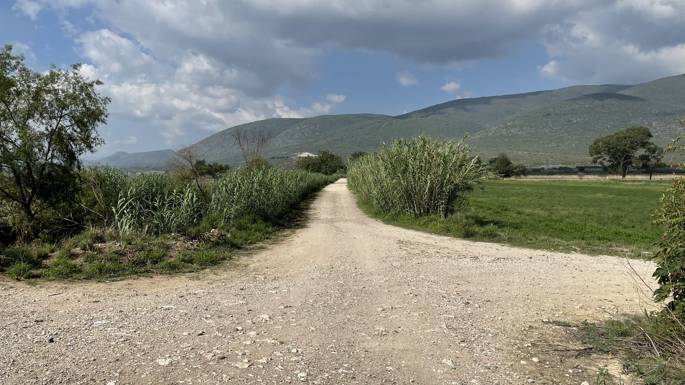
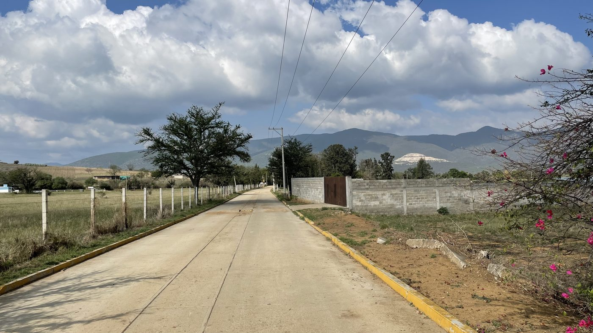
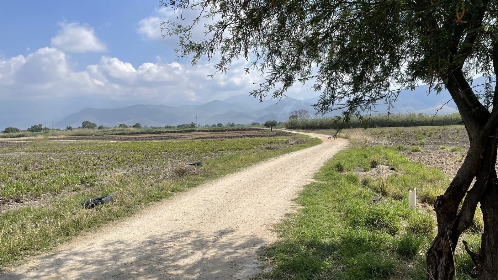
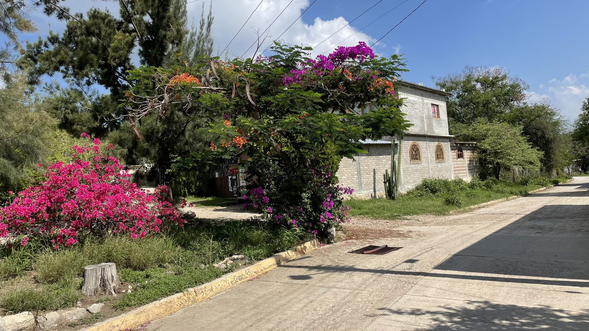
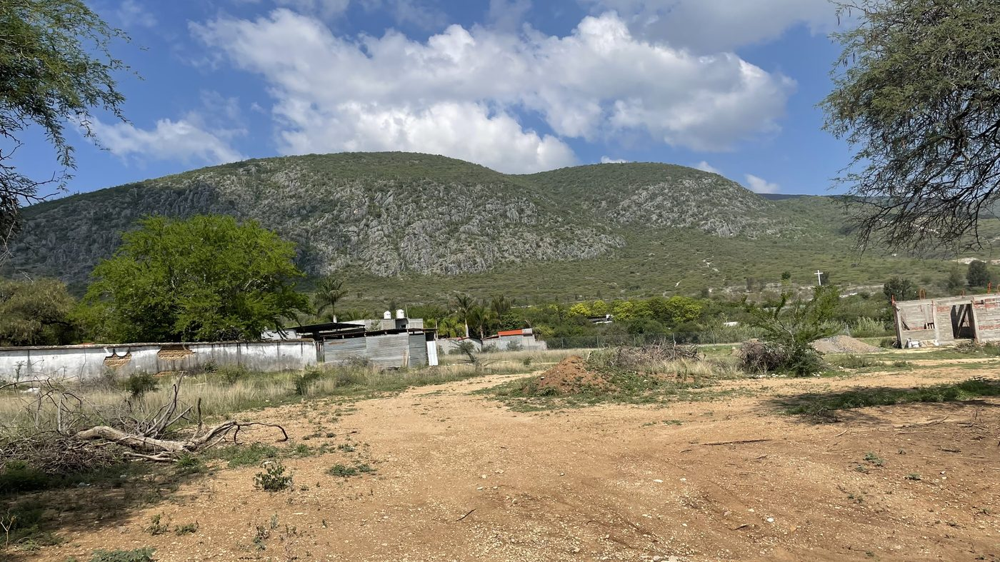
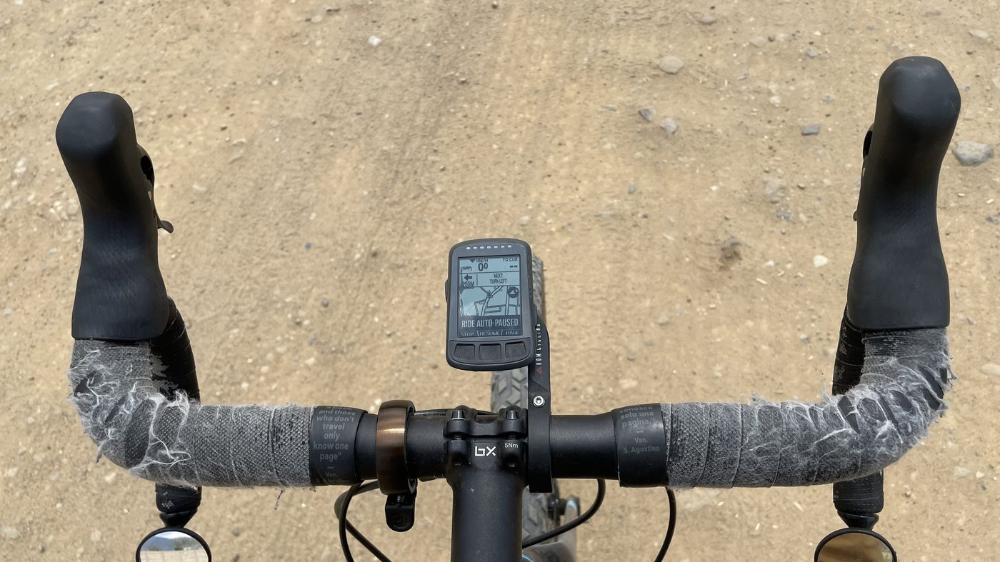
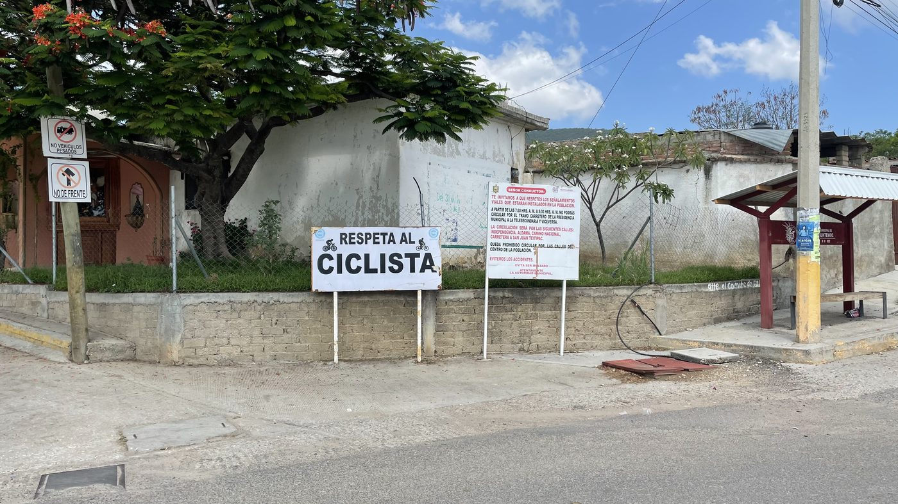
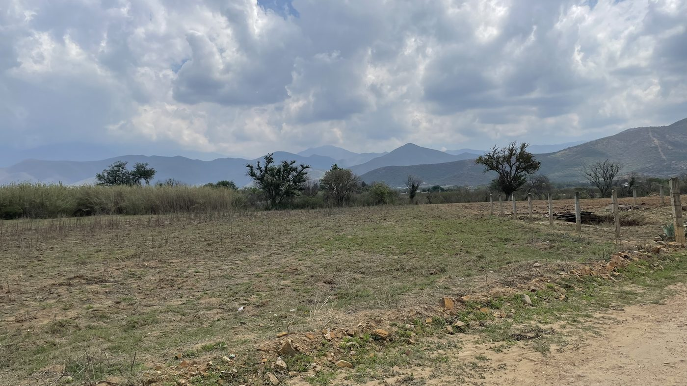

De Santa Catalina de Sena a Rojas de Cuauhtémoc Santa Catalina de Sena to Rojas de Cuauhtémoc
Mi objetivo no son las salidas épicas en el sentido convencional. Me mudé a un lugar que es épico por naturaleza. Mi meta es aumentar mi resistencia y bajar 20 kg para poder hacer recorridos cada vez más largos.
My goal is not epic rides in the conventional sense. I moved to a place that is epic by nature. My objective is to build up my endurance and lose 20 kg so that I can take progressively longer rides.

Hoy elegí un recorrido corto de ida y vuelta de apenas 12 km. Poco después de salir, vi que iba a ser espectacular y muy a la medida de mi forma de rodar en este momento.

El pavimento de mi pueblito pronto cedió paso a caminos de grava que se acercan al borde de una cadena montañosa en el límite sureste de una cuenca agrícola más amplia. Finalmente llegué a otro pueblo muy pequeño, mi destino: Rojas de Cuauhtémoc.

El pueblo tenía una bonita área recreativa para básquetbol y eventos. Noté a otro ciclista y me presenté, y empezamos a platicar. Terminamos rodando juntos hacia su destino hasta que llegó el momento de desviarme. El paisaje era espectacular, pero lamentablemente, como íbamos platicando, no saqué foto de la mejor vista del recorrido. Seguramente voy a volver a esta ruta una y otra vez.

Después de eso, mi GPS me hizo perder completamente el rumbo en un camino de terracería rodeado de perros. Por suerte vi uno de los marcadores de piedra que se encuentran comúnmente en esta región y me dirigí hacia él con la esperanza de que hubiera un camino.

En esa intersección conocí a mi segundo amigo en bicicleta. Estaba en mucho mejor forma que yo y hablaba un poco de inglés. No es que lo necesite, pero siempre honro a las personas que hablan inglés platicando con ellas en ese idioma en lugar de pedirles que hablen español conmigo. Me parece una cortesía, porque yo tengo oportunidades de practicar español todo el día, todos los días, mientras que para ellos la oportunidad de practicar inglés es escasa.

Él y yo rodamos juntos hasta que estuve cerca del camino de regreso. Originalmente había planeado un circuito, pero gracias a todos los eventos inesperados, no pude explorar todo y simplemente me alegré de llegar a casa.
Hoy hubo varios resultados emocionantes. Primero, me desperté sintiéndome bastante mal, y de alguna manera decidí que salir en bicicleta era lo mejor que podía hacer por mi cuerpo y mi mente. Y así fue: a los pocos minutos de pedalear, todo empezó a acomodarse.
Segundo, hacer amigos ciclistas fue algo inesperado y muy bueno. Intercambiamos números de WhatsApp, así que de repente estoy empezando a crear una lista de nuevos amigos que aman hacer lo que yo hago. No era fácil encontrar este tipo de amigos cuando vivía en el centro de Oaxaca de Juárez, a 15 km de aquí. Todos quedamos en mantenernos en contacto y avisarnos cuando queramos hacer salidas tranquilas juntos.

Ahora vivo exactamente en la zona donde quiero rodar, mientras que los dos tuvieron que pedalear entre 15 y 20 km solo para llegar hasta aquí. Como se puede ver en el letrero, los ciclistas son bienvenidos, y espero construir todo un nuevo grupo social de personas a las que les apasione hacer lo mismo.

Lo último fue simplemente la belleza inesperada, la paz y el silencio que encontré en este recorrido, sin mencionar la curiosa tiendita donde el dueño abría la puerta con una cuerda atada al pestillo y me sirvió unas galletas a un peso cada una.
Today I picked a short round trip of just 12 km. Soon after I left, I could see it was going to be gorgeous and very well suited to my current riding style.
The pavement of my little town quickly gave way to gravel roads running close to the edge of a mountain range at the southeast border of a larger agricultural basin. Eventually I made my way to another very small town, my destination: Rojas de Cuauhtémoc.
The town had a lovely recreational area for basketball and events. I noticed another fellow with a bicycle so I introduced myself and we started chatting. We ended up riding together toward his destination until it was time for me to turn off. The scenery was spectacular, but unfortunately, since we were chatting, I didn't take a photo of the best vista of the ride. I will be going back on this route again and again, I'm sure.
After that my GPS got me thoroughly lost on a dirt road with plenty of dogs. Fortunately I saw one of the stone intersection markers commonly found in this region and headed toward it, hoping there would be a road.
At that intersection I met my second friend on a bicycle. He was a lot fitter than I am and spoke a little English. Not that I really need that anymore, but I always honor people who speak English by chatting with them in English rather than making them speak Spanish with me. I feel it's a courtesy: I have Spanish-speaking opportunities all day, every day, and for them the chance to practice English is rare.
He and I rode together until I was close to the route back. I had originally planned a loop, but thanks to all the random events, I didn't get to explore the whole thing and was just glad to get home.
There were several exciting results today. First, I felt pretty lousy when I woke up, and somehow decided that taking a bike ride would be the best thing I could do for my body and mind. Sure enough, within a few minutes of riding, things started to sort out.
Second, making cycling friends who are compatible with me in many ways was unexpected and great. We exchanged WhatsApp numbers, so suddenly I'm starting to build a list of new friends who love to do what I do. It was not easy to find these kinds of friends when I was living in the center of Oaxaca de Juárez, 15 km away. We all agreed to keep in touch and check in when we want to do easy rides together.
I now live in the exact area where I want to ride, while both of them had put in 15 to 20 km just to get here. You can see from the sign that cyclists are welcome, and I hope to build a whole new social group of people who love to do what I love to do.
The last thing was simply the unexpected beauty, peace, and quiet I found on this ride, not to mention the quirky little tienda where the owner opened the door with a remote-control rope tied to the latch and served me cookies at one peso apiece.